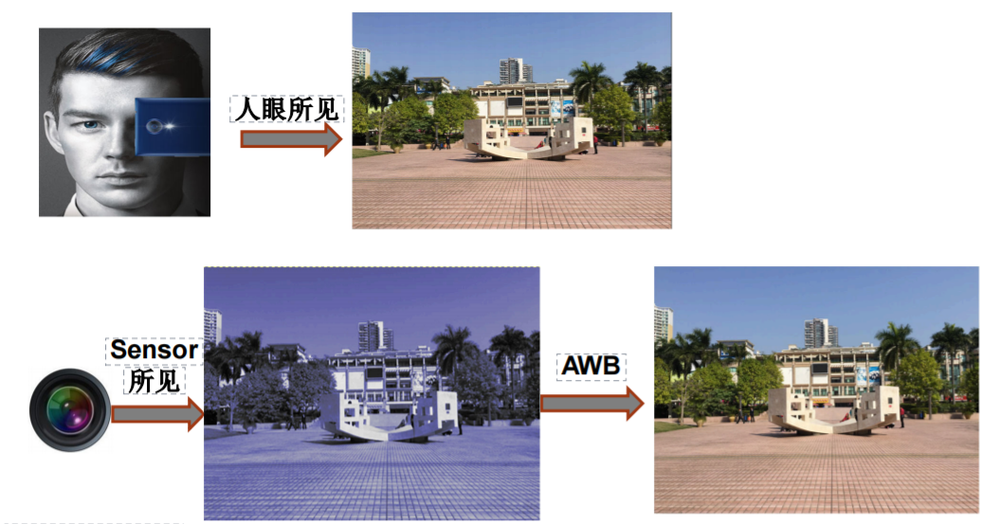
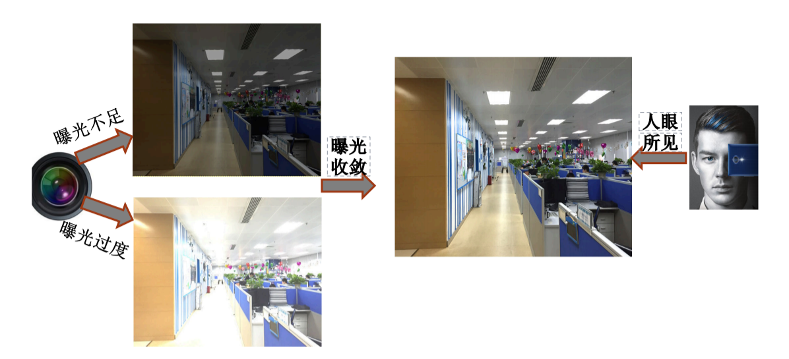
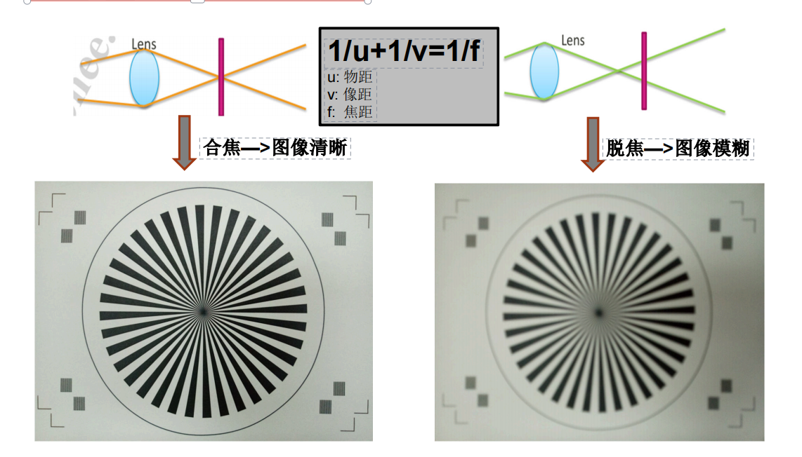
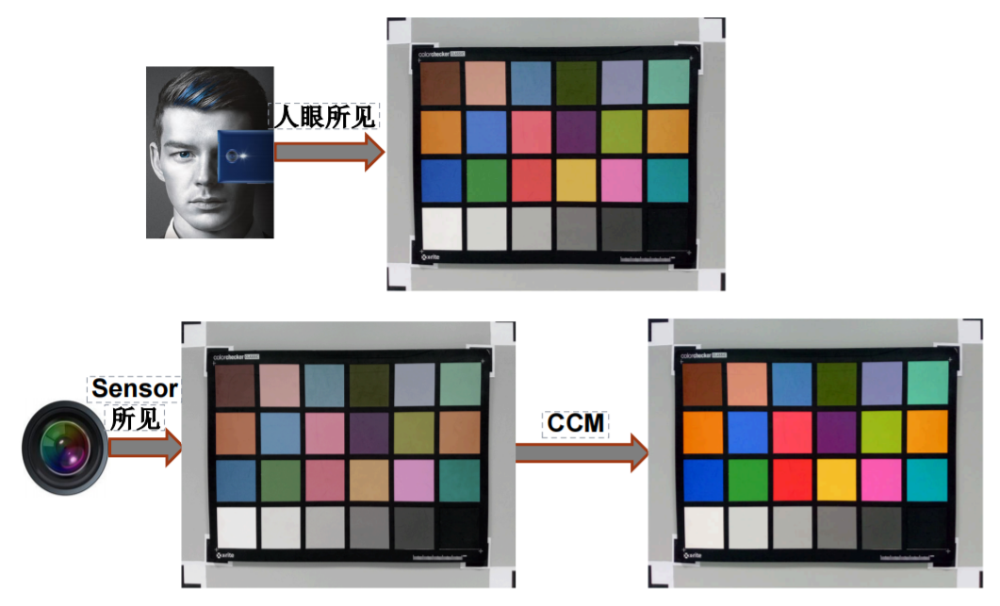
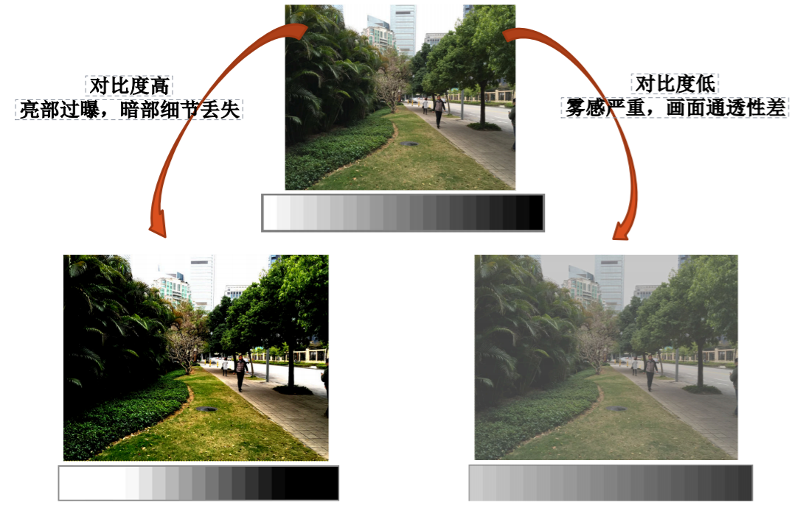
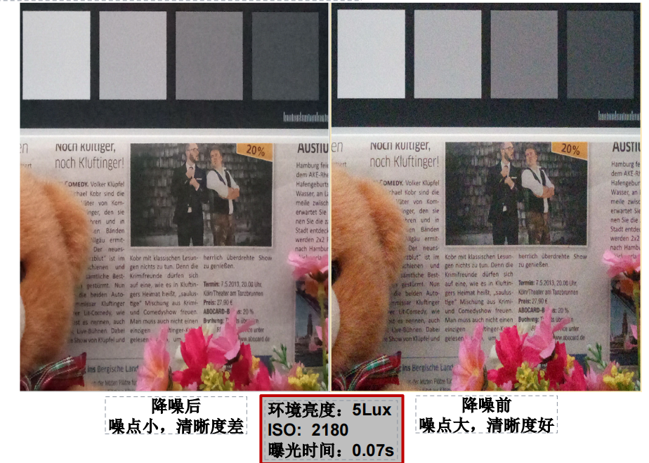
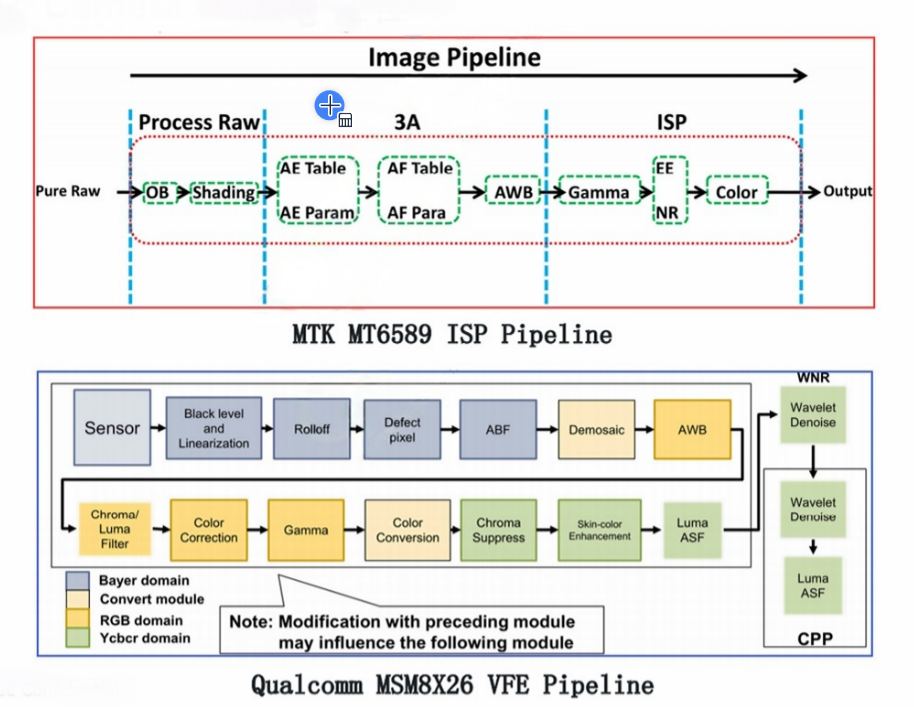

Camera调试篇-Camera Tuning流程
如何得到一张好图片？
何为一张优秀的照片
维度1：AWB (Auto White Balance)
AWB 指自动白平衡（Auto White Balance），它是一种相机或其他图像采集设备中的功能，用于根据拍摄场景中的光线条件自动调整色彩平衡，以确保白色物体在照片或视频中呈现出真正的白色，而不是带有偏色。这样可以使整个画面的色彩更加自然和真实(因为白光是由多色光混合合成)。

维度2：AEC (Auto Exposure Control)
主要负责根据环境光线调整相机的曝光参数，以确保拍摄到合适亮度的图像。

维度3：AF (Auto Focus)
用于使相机快速、准确地对焦在被拍摄对象上。

维度4：Color Restore
旨在尽可能准确地恢复物体原本的颜色。

维度5：Dynamic Range
表示图像中可容纳的从最亮到最暗部分之间的比例关系，较大动态范围能呈现更丰富细节和层次。

维度6：Sharpness && Noise
Sharpness（锐度）影响图像边缘和细节的清晰度，而 Noise（噪点）则是图像中不必要出现干扰信息。

总共六个维度：
- 维度1：AWB：图像灰阶部分颜色准确，整体颜色真实；
- 维度2：AEC：预览亮度收敛快速，过渡平稳，照片亮暗适宜；
- 维度3：AF：对焦快速精准，体验佳，照片清晰；
- 维度4：Color Restore：图像彩色部分还原准确，色彩鲜艳；
- 维度5：Dynamic Range：图像亮部不过曝，暗部细节丰富，动态宽泛，层次分明；
- 维度6：Sharpness && Noise：画质细腻，噪点少，细节丰富，清晰度好。
Camera Tuning流程
ISP对比
不同平台的ISP处理有些许差异，这里以MTK/Qcom两个老平台为例对比：

调试流程